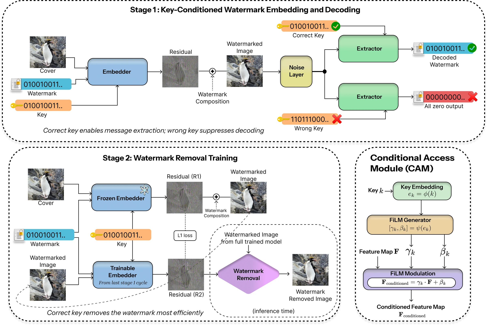
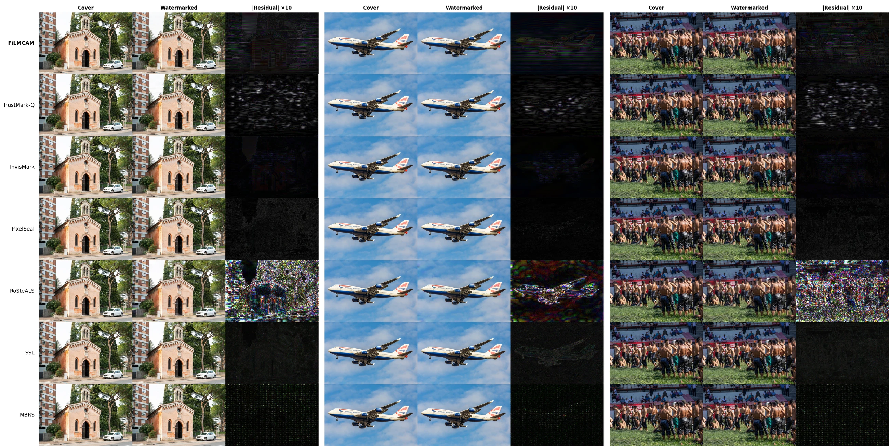
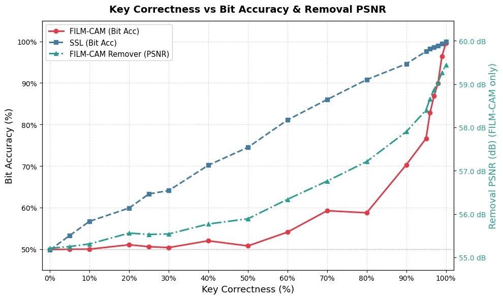
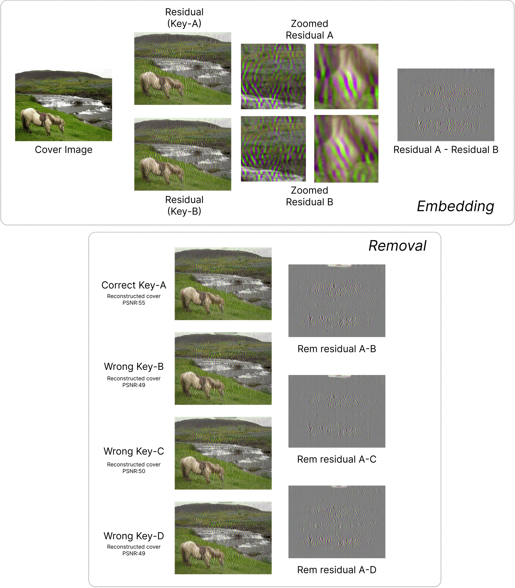
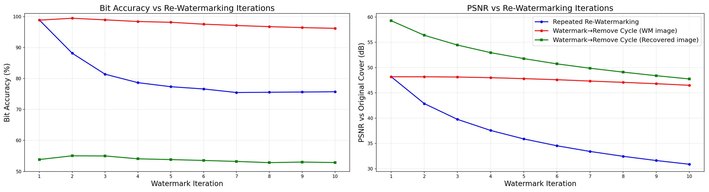
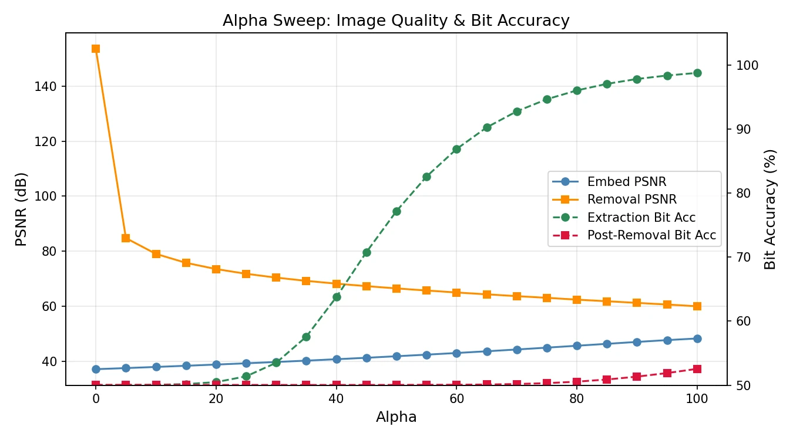
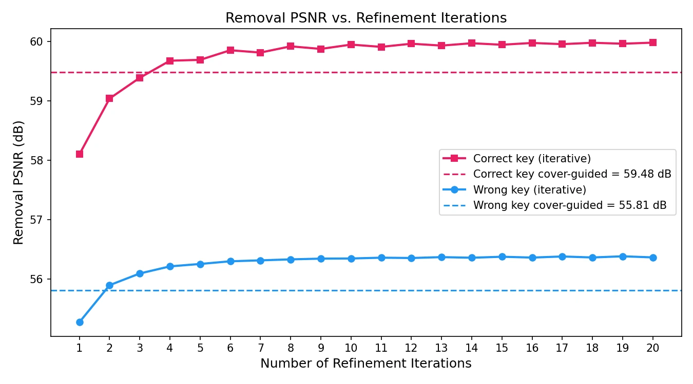

Why Conditional Watermarking?
Invisible watermarks are increasingly used to flag AI-generated media and to trace provenance. Organisations often don't want those watermarks to be open to all: they want to control who can embed, read and remove them. Today that means training and shipping a separate private model for every organisation.
We propose FiLM-CAM, a conditional-access image watermarking approach that enforces authorised encoding, decoding and removal through keyed feature modulation. A secret key conditions a Feature-wise Linear Modulation (FiLM) mechanism that transforms the internal representation of the watermark signal before embedding, coupling the payload to the key at the feature level rather than the pixel level. The same key must be presented to the decoder to recover the payload. We train the system to maximise the gap between authorised and unauthorised use, so extraction is reliable under the correct key and fails under incorrect keys.
The encoder is also trained to estimate the watermark residual regardless of whether a watermark is already present. Removal then needs no extra network: re-encode, subtract the residual, and refine iteratively, provided you hold the key. We evaluate FiLM-CAM across multiple encoder–decoder backbones and show that keyed feature modulation is an effective, architecture-agnostic conditional access module (CAM) for image watermarking.
Keyed feature modulation
A lightweight Conditional Access Module maps the key to per-channel scale and shift parameters (γ, β) that modulate the embedder bottleneck and the extractor head.
Logit-space composition
The residual is added in an atanh-transformed space with an image-dependent gain. Composing there gives cleaner, more invertible removal than plain pixel addition.
Removal with the same network
The embedder is reused to estimate the watermark residual. With the right key it is subtracted cleanly (≈54–58 dB); with a wrong key the watermark stays decodable.
Method
FiLM-CAM injects the key into the internal features of the embedder and extractor through a Conditional Access Module (CAM). Training proceeds in two stages: key-conditioned embedding and decoding, then key-conditioned removal.

Conditional Access Module
A 100-bit key passes through a 3-layer MLP φ to a 64-d embedding shared by both networks. A linear layer ψ produces channel-wise scale and shift terms, applied at the embedder bottleneck and right before the extractor's prediction head.
Key-conditioned embedding
A U-Net embedder (13.3M params) and a ConvNeXt-Base extractor are trained with image-quality, message and adversarial losses. Each iteration adds a wrong-key step whose target is an invalid all-zero codeword, widening the authorised/unauthorised gap.
Key-conditioned removal
A frozen Stage 1 embedder makes the reference residual. A trainable embedder sees the watermarked image and must reproduce it in logit space under the correct key, and shrink it to zero under a wrong key. The two stages alternate in 5-epoch cycles.
Comparison with State-of-the-Art
With the correct key, FiLM-CAM decodes ~99% of bits at 46.6–48.2 dB PSNR, comparable to or better than state-of-the-art neural watermarking methods. With a wrong key, bit accuracy drops to 0.53–0.55 (chance level is 0.50).
| Method | Payload | Bit acc. ↑ | PSNR ↑ | SSIM ↑ | LPIPS ↓ |
|---|
Visual Results
FiLM-CAM outputs on 18 COCO images: cover, watermarked image, image after removal, and the embedding and removal residuals (amplified 10×). Drag the divider to compare two layers.

Conditional Decoding
To measure how strongly unauthorised decoding fails, we report the bit error rate under a wrong key. Higher is better: 50% means the output is indistinguishable from random guessing.
FiLM-CAM is close to that ideal (46–47%). A key-based FNNS baseline still leaks a large part of the payload (23–29% BER). SSL also reaches 50% with a fully wrong carrier, but its accuracy rises steadily as the carrier gets closer to the true one. FiLM-CAM stays near chance up to ~80% key correctness and only recovers the payload once the key is almost exact (figure below).
Key-conditioning is visible in the residuals themselves: the same image and payload embedded under two different keys produce visibly different high-frequency patterns.
| Wrong-key BER (%) ↑ | COCO | DIV2K |
|---|---|---|
| SSL (wrong carrier) | 50 | 50 |
| Key-based FNNS | 29 | 23 |
| FiLM-CAM | 47 | 46 |


Watermark Removal
Regeneration-based removal attacks reduce post-removal bit accuracy to chance but reach only 20–31 dB PSNR. With the correct key, FiLM-CAM removes the watermark at 54.0–57.9 dB PSNR in 5 ms. With a wrong key, post-removal bit accuracy stays at 0.78–0.81.
| Method | Removal PSNR ↑ | Post-removal acc. | PSNR gain ↑ | Time (ms) ↓ |
|---|
Re-Watermarking
Repeatedly embedding new watermarks on top of each other accumulates distortion fast. Embedding, removing and re-embedding (the workflow FiLM-CAM enables) keeps both the watermarked and recovered images close to the original over ten cycles.

Ablations
| Variant (DIV2K) | Bit acc. ↑ | WM PSNR ↑ | Removal PSNR ↑ | Post-removal acc. ↓ |
|---|---|---|---|---|
| w/o FiLM (key fed directly) | 0.85 | 36.9 | 47.3 | 0.62 |
| w/o gain | 0.99 | 36.0 | 44.0 | 0.51 |
| w/o logit space (additive) | 0.98 | 47.0 | 54.1 | 0.55 |
| FiLM-CAM | 0.99 | 46.7 | 55.4 | 0.54 |
Without FiLM
Feeding the key directly to the embedder stops training from converging: bit accuracy drops to 0.85 and removal quality to 47.3 dB.
Without the gain
Decoding stays intact, but watermarked and removal quality fall by over 10 dB, and iterative refinement no longer works.
Additive instead of logit space
Embeds just as well but removes less cleanly: 54.1 vs. 55.4 dB on DIV2K, and 55.5 vs. 59.3 dB on COCO.


Encoder–Decoder Backbones
| Encoder | Decoder | Ext. acc. ↑ | WM PSNR ↑ | Rem. PSNR ↑ | Post-rem. acc. ↓ |
|---|---|---|---|---|---|
| MUNIT (TrustMark) | ResNet-50 | 0.97 | 41.3 | 54.0 | 0.67 |
| FiLM-CAM encoder | ResNet-50 | 0.96 | 37.5 | 43.1 | 0.67 |
| FiLM-CAM encoder | ConvNeXt-Tiny | 0.99 | 38.6 | 49.8 | 0.65 |
| FiLM-CAM encoder | ConvNeXtV2-Base | 0.98 | 38.2 | 50.5 | 0.60 |
| FiLM-CAM encoder | ConvNeXt-Base | 0.99 | 46.7 | 55.4 | 0.54 |
Robustness Against Attacks
The noise-trained variant of FiLM-CAM reaches a mean bit accuracy of 96.0% across 21 perturbations on DIV2K, second to PixelSeal (98.0%). The lowest accuracies are under JPEG compression (85.1%) and grayscale conversion (75.7%).
Limitations
Conditional access prevents key-free decoding and key-free reconstructive removal, but not key-free destruction. Overwriting with another key, or strong diffusion-based regeneration, can disable detection without the key, as with learned watermarking in general. Such attacks do not recover the original cover image. Wrong-key removal also only partially preserves the payload (≈0.78–0.81 bit accuracy). A stronger objective could sharpen this asymmetry further.
BibTeX
This research was funded in part by Adobe Research and in part by DECaDE under the UKRI/EPSRC Grant reference EP/T022485/1.